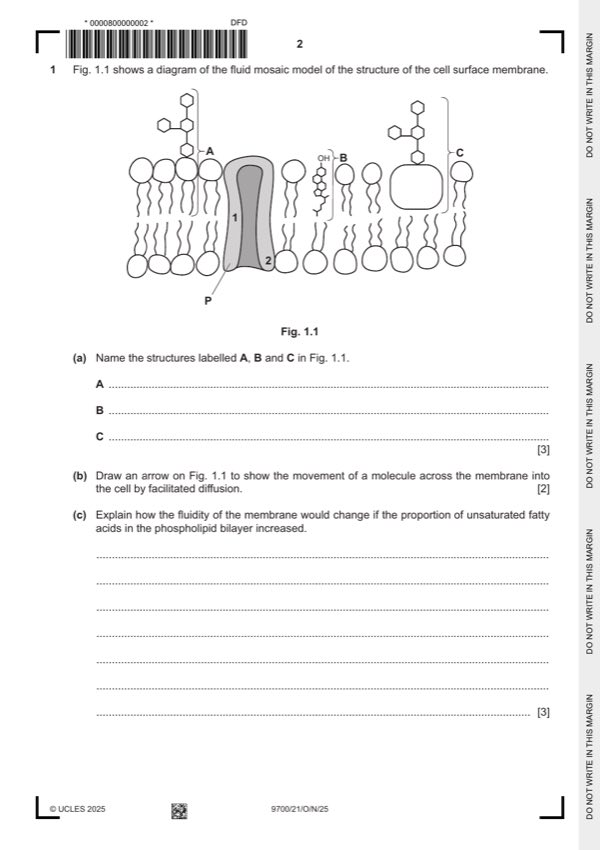

Question 1

Original paper page 2
Part 1(a) — solution
A glycolipid ; 3
B cholesterol ;
C glycoprotein ;
Mark points
- Include the ideas shown in the solution above.
Part 1(c) — solution
any three from: 3
fluidity (of membrane) increases ;
unsaturated fatty acids have double bonds ;
(double bonds) cause the fatty acid chain to, kink / bend / AW ;
unsaturated fatty acids cannot lie as close together as saturated fatty acids A ora
or
ref. to increased distance between phospholipids / AW ;
ref. to weakening the hydrophobic interactions between, fatty acid chains / cholesterol ;
Mark points
- Include the ideas shown in the solution above.
Part 1(d) — solution
any one from: 1
position 1 has amino acids with, hydrophobic / non polar / AW, R-groups ;
position 2 has amino acids with, hydrophilic / polar / ionic / AW, R-groups;
A ref. to amine and carboxyl groups as appropriate
Mark points
- Include the ideas shown in the solution above.